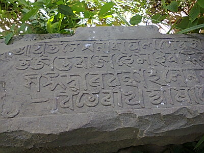
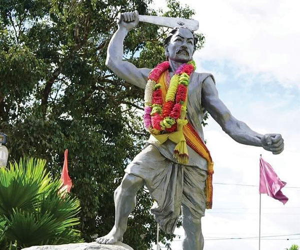

Dima Hasao has a rich and ancient history. The region was historically associated with the Dimasa Kachari Kingdom and was inhabited by the Dimasa Kacharis and several other indigenous communities.
Maibang, located on the banks of the Mahur River, was an important historical capital of the Dimasa Kingdom. The town still has ancient ruins, stone inscriptions and monuments connected with the former kingdom.
During the British period, the hill region was known as North Cachar Hills. The British administration treated the area differently because of its distinct tribal communities and traditional systems.
In 1951, the United Mikir and North Cachar Hills District was created with an autonomous administrative arrangement. Later, North Cachar Hills became a separate district in 1970.
In 2010, North Cachar Hills District was officially renamed Dima Hasao. The name Dima Hasao means "Dimasa Hills" in the Dimasa language.
Today, Dima Hasao preserves its historical heritage through its archaeological sites, traditional culture and important historical places such as Maibang.
|
 Historical Stone Inscription |
 Sambhudhan Phonglo |
Sambhudhan Phonglo was a prominent Dimasa leader and freedom fighter from Longkhor, near Maibang, in present-day Dima Hasao. He was born in 1850 and became known for his opposition to British colonial rule.
He travelled through the North Cachar Hills and organized local people to resist British authority. He also trained young people at Maibang and worked to protect the traditional rights and identity of the Dimasa community.
In 1882, British forces moved against his centre at Maibang. Sambhudhan Phonglo and his followers resisted the British forces. Although the movement was eventually suppressed, his resistance became an important chapter in the history of Dima Hasao.
Sambhudhan Phonglo is remembered as an important symbol of courage, indigenous resistanc
| << Previous | Next >> |